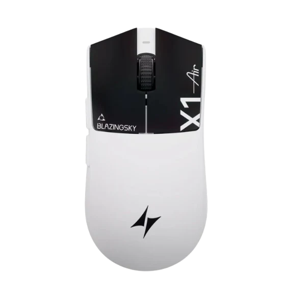
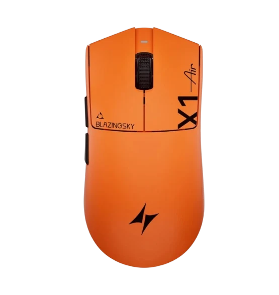

Mouse Gamer ATK Blazing Sky X1 V2 Air+
La cúspide de la ligereza en formato full-size. El ATK Blazing Sky X1 V2 Air+ condensa la mayor innovación tecnológica del mercado competitivo en un chasis simétrico cerrado de tan solo 48±3 gramos. Diseñado ergonómicamente para manos medianas a grandes con agarre tipo Claw o Palm, integra el revolucionario sensor PixArt PAW3955 Master (capaz de alcanzar 850 IPS y 75G de aceleración), el nuevo microcontrolador Nordic 54L15 y polling rate nativo de 8000 Hz tanto cableado como inalámbrico.
- Envío gratis en compras sobre $50.000
- Garantía oficial de 12 meses
- Retiro en tienda disponible
La cúspide de la ligereza en formato full-size. El ATK Blazing Sky X1 V2 Air+ condensa la mayor innovación tecnológica del mercado competitivo en un chasis simétrico cerrado de tan solo 48±3 gramos. Diseñado ergonómicamente para manos medianas a grandes con agarre tipo Claw o Palm, integra el revolucionario sensor PixArt PAW3955 Master (capaz de alcanzar 850 IPS y 75G de aceleración), el nuevo microcontrolador Nordic 54L15 y polling rate nativo de 8000 Hz tanto cableado como inalámbrico.
| Sensor | HERO 25K |
| DPI máximo | 25.600 |
| Botones | 11 programables |
| Conexión | Cable USB |
| Peso | 121 g (ajustable) |
Aquí puedes conectar tu sistema de reseñas más adelante.